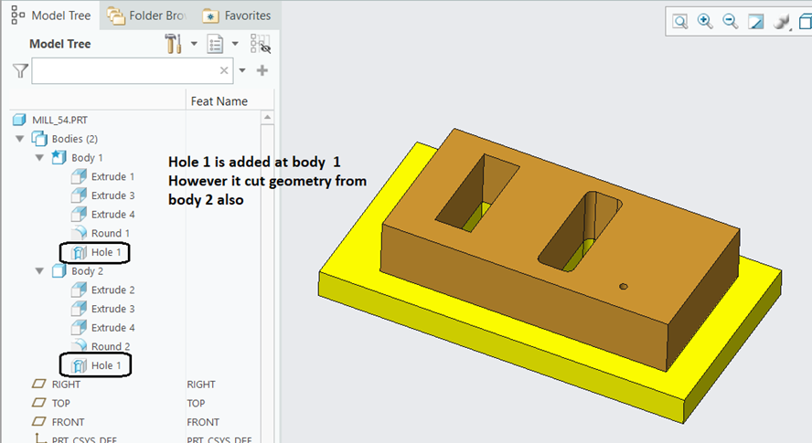
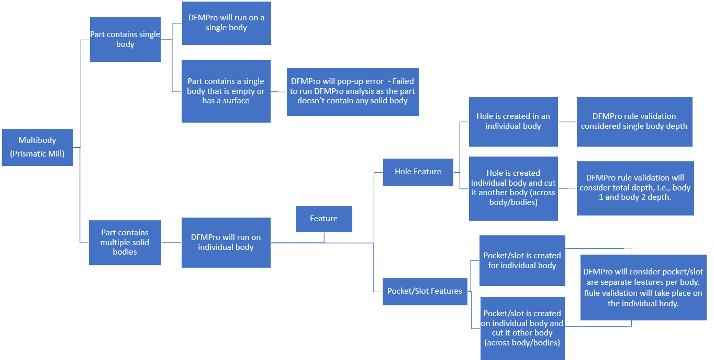

パーツに複数のミリング用ソリッドボディが含まれている場合、DFMPro はこれらのボディを個別のパーツとしてそれぞれ解析します。
穴フィーチャーコマンドによって作成された穴に関連するルール（例：ドリル加工ルール）は、単一のフィーチャーとして実行されます（穴が単一ボディ内に存在する場合、または複数ボディを貫通して存在する場合でも、総深さを持つ単一の穴フィーチャーとして扱われます）。
対応しているルールは以下のとおりです：
以下のケースでは、穴は作成されて別のボディまで切削されています。この場合、DFMPro のルール検証では、ボディ1およびボディ2の深さを含む総深さが考慮されます。


注記：
解析領域の「Selected Region」および「Edit Machining Setup」オプションは、マルチボディパーツの場合には使用できません。
パターン穴およびミラー穴はサポートされていません。